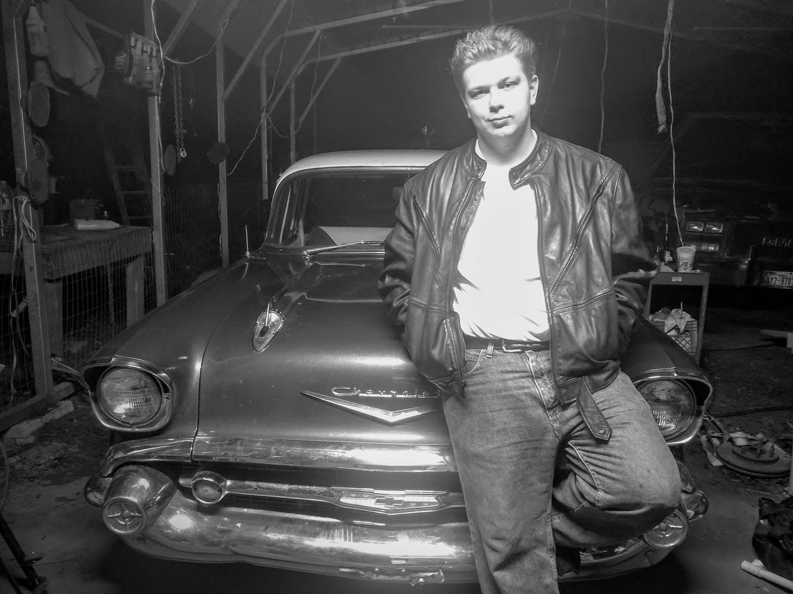

Joshua-huff | WDD 130

Hello!!! My name is Joshua Huff and I am from East Texas. I enjoy playing instruments, mainly the alto saxophone or the clarinet! I also play bass, trombone, trumpet, cornet, piano a little electric guitar, Irish penny whistle, recorder, tenner recorder and well... the list goes on. I am excited to learn to create my own websites and I think this class will be very educational and exciting!!!!